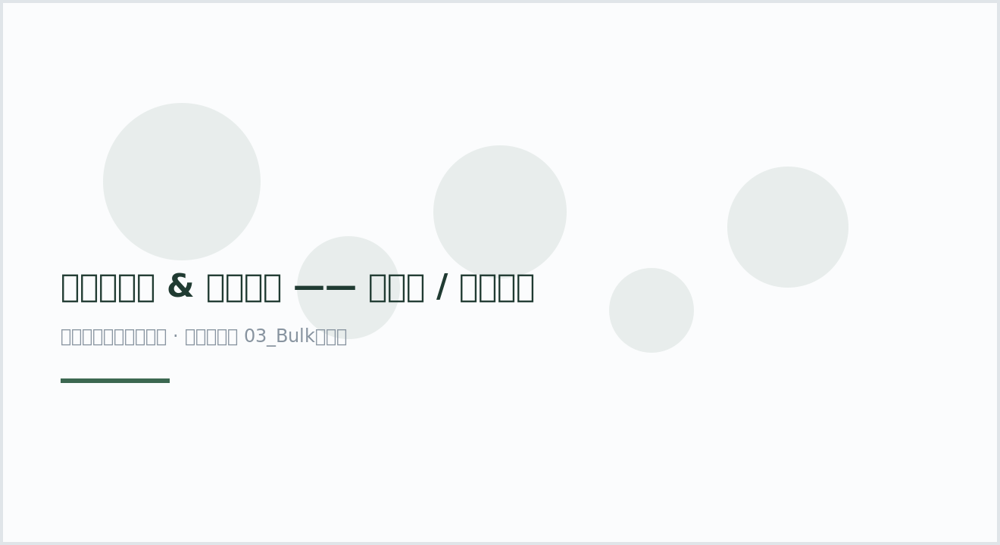

总览
- 独立研究：27 项（跨库镜像已按研究合并）
- 含空间转录组：3 项 ⭐（本领域稀缺资源）
- 可直接下载矩阵：21 / 27 项
- 样本合计：约 226 个
编号按引用数降序（高影响力在前）。⭐ = 含空间转录组。
plot39 · 代码 0 · 图 0 · 笔记 28 · 代码库专题
代码库整理的专题，README 见原始目录。

增生性疤痕 & 瘢痕疙瘩 —— 单细胞 / 空间转录组数据集汇总（自动生成占位图）
图源：（自动生成占位图）
从专题 README 抽取；原文顺序保留，未跑过的部分照实标注。
整理时间 2026-10-08 ｜ 工具 seqout v0.2.7 ｜ 数据库 GEO、SRA、ENA、DDBJ、ArrayExpress、GSA、GEA
检索式
keloidORhypertrophic scarORpathological scarORscarring（人类，单细胞 / 空间转录组）
编号按引用数降序（高影响力在前）。⭐ = 含空间转录组。
| # | 疾病 | 研究 | 年份 | 技术 | 样本 | 引用 | 可下载 | 数据格式 |
|---|---|---|---|---|---|---|---|---|
| 01 | 瘢痕 | Foster-成纤维细胞异质性(5库合并) |
2021 | scRNA-seq | 6 | 472 | ✅ 可下载 | tar×7、rds×3 |
| 02 | 瘢痕疙瘩 | 华大-瘢痕疙瘩皮肤单细胞 |
2020 | scRNA-seq | 8 | 131 | ⚠️ 需手动确认 | — |
| 03 | 瘢痕疙瘩 | 韩国SMC-单细胞+Visium空转⭐ ⭐ |
2022 | scRNA-seq + 空间转录组 | 7 | 117 | ✅ 可下载 | 10x_mtx×7、10x_h5×4、tar×1、table×1 |
| 04 | 瘢痕 | 丝氨酸蛋白酶-肌成纤维细胞 |
2021 | scRNA-seq | 13 | 83 | ✅ 可下载 | 10x_mtx×13、tar×1 |
| 排除 | 瘢痕疙瘩 | ArrayExpress-部位特异表达(2017) |
2017 | 未标注 | 40 | 47 | ⚠️ 需手动确认 | — |
| 05 | 瘢痕疙瘩 | 单细胞+WGCNA共表达 |
2021 | scRNA-seq | 6 | 38 | ⚠️ 需手动确认 | — |
| 06 | 瘢痕疙瘩 | SPP1+巨噬/POSTN+成纤维 |
2024 | scRNA-seq | 4 | 28 | ✅ 可下载 | tar×5、table×1 |
| 07 | 瘢痕 | 力学转导抑制-猪模型 |
2025 | scRNA-seq | 13 | 20 | ✅ 可下载 | tar×7、10x_mtx×7 |
| 08 | 瘢痕疙瘩 | 活动期vs静止期 |
2023 | scRNA-seq | 11 | 12 | ✅ 可下载 | 10x_mtx×11、tar×1 |
| 09 | 瘢痕疙瘩 | 免疫异质性-Th17 |
2025 | scRNA-seq | 6 | 12 | ✅ 可下载 | 10x_mtx×6、tar×1 |
| 10 | 瘢痕疙瘩 | 炎症纤维化网络(mRNA/miRNA/sc) |
2024 | scRNA-seq | 6 | 11 | ✅ 可下载 | table×1 |
| 11 | 瘢痕疙瘩+增生性疤痕 | 增生性疤痕vs瘢痕疙瘩⭐ |
2024 | scRNA-seq | 2 | 8 | ✅ 可下载 | 10x_mtx×2、tar×1 |
| 12 | 瘢痕疙瘩 | PIEZO2机械感受器 |
2025 | scRNA-seq | 4 | 6 | ✅ 可下载 | 10x_mtx×4、tar×1 |
| 13 | 瘢痕疙瘩 | ZNF469-ECM产生 |
2025 | scRNA-seq | 6 | 4 | ✅ 可下载 | table×1 |
| 14 | 瘢痕疙瘩 | 原代KFs多处理 |
2024 | scRNA-seq | 5 | 2 | ✅ 可下载 | tar×6 |
| 排除 | 病理性瘢痕 | TAGLN致病机制 |
2024 | scRNA-seq | 6 | 3 | ✅ 可下载 | table×6、tar×1 |
| 15 | 瘢痕疙瘩 | 浸润区vs高细胞区 |
2026 | scRNA-seq | 8 | 1 | ✅ 可下载 | tar×9 |
| 16 | 瘢痕疙瘩 | Schwann细胞 |
2022 | scRNA-seq | 8 | 0 | ✅ 可下载 | 10x_mtx×8、tar×1 |
| 17 | 瘢痕疙瘩 | Midkine免疫微环境 |
2024 | scRNA-seq | 12 | 0 | ✅ 可下载 | table×1 |
| 18 | 瘢痕疙瘩 | KFs scRNA（HMME-SDT 处理） |
2024 | scRNA-seq | 9 | 0 | ✅ 可下载 | XLSX×1 |
| 19 | 瘢痕 | 伤口修复肌成纤维细胞 |
2024 | scRNA-seq | 6 | 0 | ⚠️ 需手动确认 | — |
| 20 | 瘢痕疙瘩 | KFs scRNA |
2024 | scRNA-seq | 9 | 0 | ⚠️ 需手动确认 | — |
| 20 | 瘢痕疙瘩 | 真皮成纤维亚群 |
2025 | scRNA-seq | 4 | 0 | ✅ 可下载 | 10x_mtx×4、tar×1 |
| 21 | 病理性瘢痕 | 单细胞+空转图谱⭐ ⭐ |
2025 | scRNA-seq + 空间转录组 | 6 | 0 | ✅ 可下载 | tar×4 |
| 22 | 瘢痕疙瘩 | CD45+免疫细胞 |
2025 | scRNA-seq | 6 | 0 | ⚠️ 需手动确认 | — |
| 23 | 瘢痕 | ALKBH5-m6A-NLRP3 |
2026 | scRNA-seq | 6 | 0 | ✅ 可下载 | tar×1 |
| 24 | 增生性疤痕 | 烧伤瘢痕-CO₂激光 |
2026 | scRNA-seq | 16 | 0 | ✅ 可下载 | 10x_mtx×16、tar×1 |
| 25 | 瘢痕疙瘩 | Xenium空转-间充质成纤维⭐ ⭐ |
2026 | scRNA-seq + 空间转录组 | 2 | 0 | ✅ 可下载 | 10x_h5×2、tar×1 |
| # | 研究 | 平台 | 年份 | 数据格式 |
|---|---|---|---|---|
| 03 | 韩国SMC-单细胞+Visium空转⭐ |
Visium（4 张切片） | 2022 | 10x_mtx×7、10x_h5×4、tar×1、table×1 |
| 23 | 单细胞+空转图谱⭐ |
空间转录组（Hy/Ke 各 1 张） | 2025 | tar×4 |
| 27 | Xenium空转-间充质成纤维⭐ |
Xenium 260-gene panel | 2026 | 10x_h5×2、tar×1 |
| 疾病类型 | 研究数 |
|---|---|
| 瘢痕疙瘩 | 18 |
| 瘢痕 | 5 |
| 病理性瘢痕 | 2 |
| 瘢痕疙瘩+增生性疤痕 | 1 |
| 增生性疤痕 | 1 |
⚠️ 瘢痕疙瘩（keloid）数据远多于增生性疤痕（hypertrophic scar）。
真正研究 HS 的仅 #12、#26，以及 #01（Foster 2021，同时含 HS 样本）等少数几项。
| 格式 | 含义 | 读取方式 |
|---|---|---|
10x_mtx |
10x MTX 三件套 | sc.read_10x_mtx() / Seurat Read10X() |
10x_h5 |
10x HDF5 | sc.read_10x_h5() |
rds |
R 对象 | readRDS() |
table |
矩阵表格 | pd.read_csv() |
tar |
压缩包 | 解压后查看 |
seqout show GSE181297 # 查看矩阵文件清单
seqout download GSE181297 --supplementary -o ./GSE181297_suppl # 下载补充文件由 seqout v0.2.7 自动整理；数据内容与可下载性以原始数据库为准。
这个专题只有笔记或外部工具，没有可直接展示的源码文件。